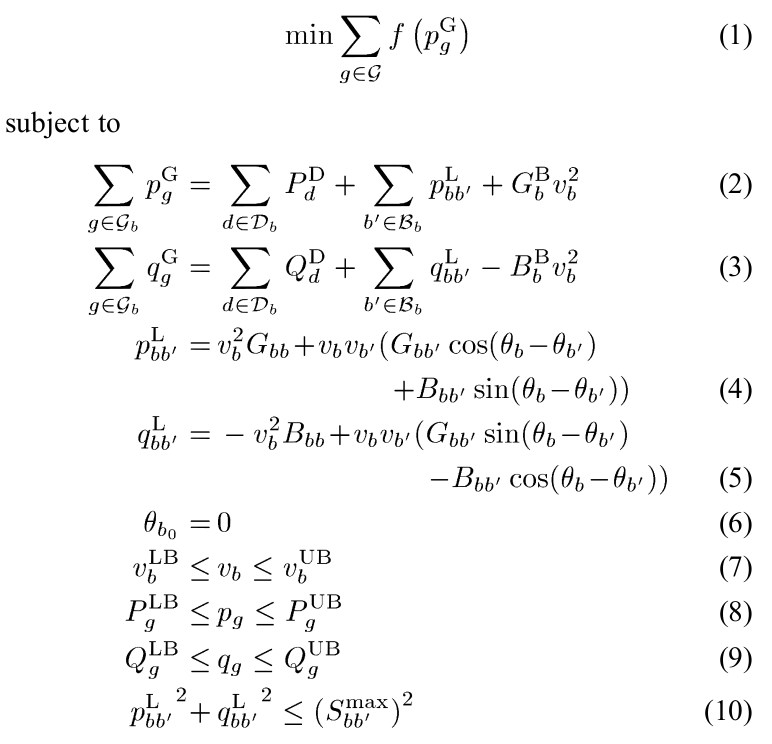

Optimal power flow problem¶
Optimal power flow problem (OPF) is a well studied optimization problem in power systems. The objective of OPF is to find a steady state operating point that minimizes the cost of electric power generation while satisfying operating constraints and meeting demand. The problem can be formulated in various ways.
The DCOPF problem is a linear optimisation problem, whereas the ACOPF problem is nonconvex and nonlinear. The ACOPF problem can be formulated using either polar or rectangular coordinates. The current release of OATS provides an implementation in the polar coordinates. The mathematical model of the ACOPF borrowed from [1] is as follows:
{kind=link}
-
oats.dcopf(tc='default', solver='ipopt', neos=True, out=0)¶ Solves DC optimal power flow problem
- ARGUMENTS:
tc (*.xlsx file) - OATS test case. See OATS data format for details
solver (str) - name of a solver. Defualt is ‘ipopt’
neos (bool) - If True, the problem is solved using NEOS otherwise using a localy install solver.
out (bool) - If True, the output is displayed on screen.
-
oats.acopf(tc='default', solver='ipopt', neos=True, out=0)¶ Solves AC optimal power flow problem
- ARGUMENTS:
tc (*.xlsx file) - OATS test case. See OATS data format for details
solver (str) - name of a solver. Defualt is ‘ipopt’
neos (bool) - If True, the problem is solved using NEOS otherwise using a localy install solver.
out (bool) - If True, the output is displayed on screen.
[1] W. A. Bukhsh, A. Grothey, K. I. M. McKinnon and P. A. Trodden, “Local Solutions of the Optimal Power Flow Problem,” in IEEE Transactions on Power Systems, vol. 28, no. 4, pp. 4780-4788, Nov. 2013.(doi: 10.1109/TPWRS.2013.2274577)